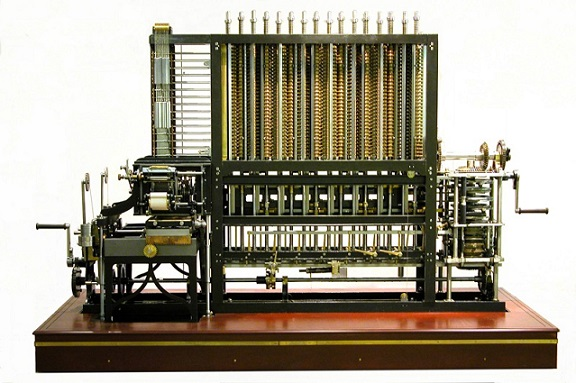
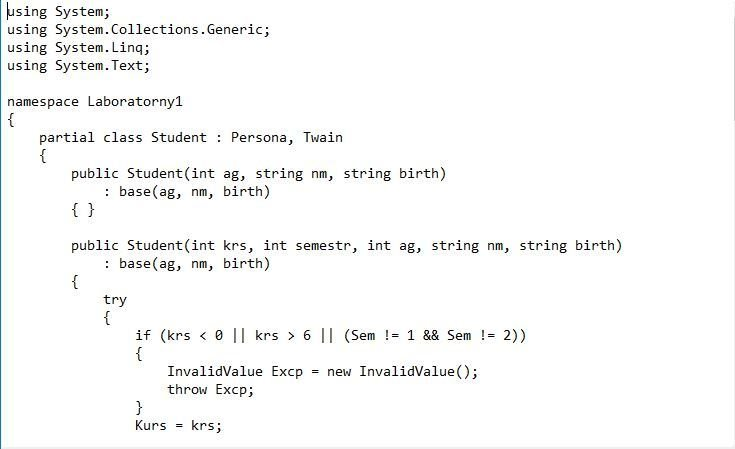

Основы алгоритмизации и программирования
Введение в программирование
Edward Á Albert / github:Tgjmjgj
Содержание лекции
Что нас ждет:
- Немного истории
- Базовые понятия
- Введение в терминологию
- Системы счисления
Ада Лавлейс (1815 - 1852) Первый программист в истории

Ввела понятия:
- Ячейка
- Цикл
- Условие
Машина Бэббиджа
Немного истории
- 1927 г. - первый аналоговый компьютер (АВМ)
- 1938 г. - первая программируемая вычислительная машина Z1
- 1944 г. - первый язык программирования высокого уровня Планкалькюль
- 1946 г. - первый универсальный электронный компьютер (ЭВМ) - ЭНИАК
ЭНИАК

Прорыв компьютерной разработки в США 1950-1960

История языков программирования
- Середина 50-ых гг. - FORTRAN
- Конец 50-ых гг. - ALGOL
- 60 - 70 гг. - PL1, COBOL, Simula-67, Pascal, Ada
- Середина 70-ых гг. - C
- 70 - 80 гг. - формирование ООП
- 90 гг. - становление Интернета и развитие веб-программирования
- И понеслось...
Три основных типа языков программирования:
- Машинные языки
- Языки ассемблера
- Языки высокого уровня
Машинные языки программирования
| + 00010011 00000000 00000100 00100111 01110100 |
| + 00010100 00000000 01011111 00110100 01011111 |
| + 00010010 00000000 00100111 01000000 00100111 |
Языки ассемблера
| LOAD A |
| ADD B |
| STORE C |
Высокоуровневые языки
| C = A + B; |
Классификация парадигм программирования:
- Процедурное программирование
- Декларативное программирование
- Объектно-ориентированное программирование
- Функциональное программирование
Процедурное программирование

Декларативное программирование

Объектно-ориентированное программирование
Функциональное программирование

Системы счисления
- Позиционные
XXXI, VI, CXVII
- Непозиционные
A7DC, 010011, 63294
| Десятеричная | Двоичная | Восьмеричная | Шестнадцатеричная |
| 00 | 0000 | 00 | 0 |
| 01 | 0001 | 01 | 1 |
| 02 | 0010 | 02 | 2 |
| 03 | 0011 | 03 | 3 |
| 04 | 0100 | 04 | 4 |
| 05 | 0101 | 05 | 5 |
| 06 | 0110 | 06 | 6 |
| 07 | 0111 | 07 | 7 |
| 08 | 1000 | 10 | 8 |
| 09 | 1001 | 11 | 9 |
| 10 | 1010 | 12 | A |
| 11 | 1011 | 13 | B |
| 12 | 1100 | 14 | C |
| 13 | 1101 | 15 | D |
| 14 | 1110 | 16 | E |
| 15 | 1111 | 17 | D |
Представление данных в ЭВМ

Компиляция
Компиляцией называется процесс трансляции (преобразования) исходного программного кода в эквивалентный код машинного уровня.
Компилятор - программа, выполняющая это преобразование.